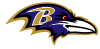

In 1996 the Cleveland Browns owner Art Model moved the beloved Cleveland Browns team to Baltimore. Baltimore had been without a professional football team for 12 years, after the Baltimore Colts owner Robert Irsay moved the team in a snowstorm in 1984. The picture of the snowy Mayflower truck all packed up still incites sadness from beloved colts fans who remember the day that broke Baltimores heart.
Baltimore will be forever greatful to Art Model for bringing professional football back to baltimore.
Coach Marchibroda coached the Baltimore Ravens from 1996 until 1998. During his coaching the team had an overall record of 16-31-1. The 1996 draft produced two of the Baltimore Ravens most beloved and future hall of fame players left tackle Johnathan Ogden and linebacker Ray Lewis. The team went 4-12 the first season. In 1997, the team drafted a key impact player outside linebacker Peter Bowlware who won the AFC Defensive rookie of the year. The team finished 6-9-1. In 1998, despite adding talent to the offense and defensive sides of theball still ended up with a record of 6-10. Head coach Ted Marchibroda was replaced at the end of the 1998 season.

In the 8 years that Brian Billick coached the Baltimore Ravens we saw tremendous growth and arguably one of the greatest defense's in modern NFL history. Coach Billick was an offensive coordinator with the Minnesota Vikings from 1992-1998. In that time he helped the team reach the playoffs 6 of the 7 years he was there and in 1998 set a record for most points scored that stood for 9 years. In 1999, coach Billick lead the Ravens to an 8-8 record and their first season they didn't have a losing record. Also during the end of the season Art Model sold the team to current owner Steve Biscotti.
In the 2000 season the Baltimore Ravens would finish the season with a record of 12-4. The first true winning season for the Ravens and it was not normal at all. They won most games of the season by imposing their tough run defense on offenses causing them to to become pass heavy to be able to move the ball. Despite only scoring a total of 29 touchdowns for the entire season they were able to make up the difference with defensive touchdowns and field goals. They were a wildcard team and were forced to play away games against the Broncos, Titans, and Raiders. They won all 3 games and made it to Superbowl 35 against the New York Giants. They won that game 34-7 and were crowned Super Bowl 35 champions.
2001 the Ravens were 10-6 and made the playoffs but were eliminated in first round. In 2002, they were 7-9 and were forced to part ways with 9 impact players which ultimately played a factor to the losing record. In 2003, The Ravens won the AFC North title at 10-6 and made the playoffs again. They were eliminated in the first round. The Ravens would make the Playoffs 2 more seasons before Coach Billick was replaced by Coach John Harbaugh in 2008. Coach Billick would have an overall record of 80-64.
| Coach Name | Wins | Losses | Ties |
| Marchibroda | 16 | 31 | 1 |
| Billick | 80 | 64 | 0 |
For further information about the Ravens 2008-2017